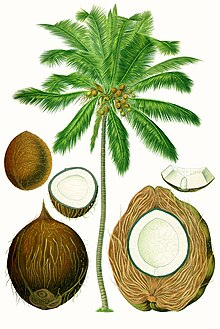

____________________________________________________________________________________________________________________________________________________________________________________________________________________________________________________


____________________________________________________________________________________________________________________________________________________________________________________________________________________________________________________
Cocos nucifera is a large palm, growing up to 30 metres (100 feet) tall, with pinnate leaves 4 to 6 m (13 to 20 ft) long, and pinnae 60 to 90 centimetres (2 to 3 ft) long; old leaves break away cleanly, leaving the trunk smooth.[6] On fertile soil, a tall coconut palm tree can yield up to 75 fruits per year, but more often yields less than 30.[7][8][9] Given proper care and growing conditions, coconut palms produce their first fruit in six to ten years, taking 15 to 20 years to reach peak production.[10] True-to-type dwarf varieties of Pacific coconuts have been cultivated by the Austronesian peoples since ancient times. These varieties were selected for slower growth, sweeter coconut water, and often brightly colored fruits.[11] Many modern varieties are also grown, including the Maypan, King, and Macapuno. These vary by the taste of the coconut water and color of the fruit, as well as other genetic factors.[12]
Botanically, the coconut fruit is a drupe, not a true nut.[13] Like other fruits, it has three layers: the exocarp, mesocarp, and endocarp. The exocarp is the glossy outer skin, usually yellow-green to yellow-brown in color. The mesocarp is composed of a fiber, called coir, which has many traditional and commercial uses. Both the exocarp and the mesocarp make up the "husk" of the coconut, while the endocarp makes up the hard coconut "shell". The endocarp is around 4 millimetres (1⁄8 inch) thick and has three distinctive germination pores (micropyles) on the distal end. Two of the pores are plugged (the "eyes"), while one is functional.[14][15] Palm heavy with fruit The interior of the endocarp is hollow and is lined with a thin brown seed coat around 0.2 mm (1⁄64 in) thick. The endocarp is initially filled with a multinucleate liquid endosperm (the coconut water). As development continues, cellular layers of endosperm deposit along the walls of the endocarp up to 11 mm (3⁄8 in) thick, starting at the distal end. They eventually form the edible solid endosperm (the "coconut meat" or "coconut flesh") which hardens over time. The small cylindrical embryo is embedded in the solid endosperm directly below the functional pore of the endosperm. During germination, the embryo pushes out of the functional pore and forms a haustorium (the coconut sprout) inside the central cavity. The haustorium absorbs the solid endosperm to nourish the seedling.[14][16][17] Coconut fruits have two distinctive forms depending on § domestication. Wild coconuts feature an elongated triangular fruit with a thicker husk and a smaller amount of endosperm. These allow the fruits to be more buoyant and make it easier for them to lodge into sandy shorelines, making their shape ideal for ocean dispersal.[18][19][20] Domesticated Pacific coconuts, on the other hand, are rounded in shape with a thinner husk and a larger amount of endosperm. Domesticated coconuts also have more amounts of coconut water.[18][19][20] These two forms are referred to by the Samoan terms niu kafa for the elongated wild coconuts, and niu vai for the rounded domesticated Pacific coconuts.[18][19][20] A full-sized coconut fruit weighs about 1.4 kilograms (3 pounds 1 ounce). Coconuts sold domestically in coconut-producing countries are typically not de-husked. Especially immature coconuts (6 to 8 months from flowering) are sold for coconut water and softer jelly-like coconut meat (known as "green coconuts", "young coconuts", or "water coconuts"), where the original coloration of the fruit is more aesthetically pleasing.[21][22] Whole mature coconuts (11 to 13 months from flowering) sold for export, however, typically have the husk removed to reduce weight and volume for transport. This results in the naked coconut "shell" with three pores more familiar in countries where coconuts are not grown locally. De-husked coconuts typically weigh around 750 to 850 grams (1 lb 10 oz to 1 lb 14 oz). De-husked coconuts are also easier for consumers to open, but have a shorter postharvest storage life of around two to three weeks at temperatures of 12 to 15 °C (54 to 59 °F) or up to 2 months at 0 to 1.5 °C (32.0 to 34.7 °F). In comparison, mature coconuts with the husk intact can be stored for three to five months at normal room temperature .[21][22]
Unlike some other plants, the palm tree has neither a taproot nor root hairs, but has a fibrous root system.[23] The root system consists of an abundance of thin roots that grow outward from the plant near the surface. Only a few of the roots penetrate deep into the soil for stability. This type of root system is known as fibrous or adventitious, and is a characteristic of grass species. Other types of large trees produce a single downward-growing tap root with a number of feeder roots growing from it. 2,000–4,000 adventitious roots may grow, each about 1 cm (1⁄2 in) large. Decayed roots are replaced regularly as the tree grows new ones.[24]
The evolutionary history and fossil distribution of Cocos nucifera and other members of the tribe Cocoseae is more ambiguous than modern-day dispersal and distribution, with its ultimate origin and pre-human dispersal still unclear. There are currently two major viewpoints on the origins of the genus Cocos, one in the Indo-Pacific, and another in South America.[26][27] The vast majority of Cocos-like fossils have been recovered generally from only two regions in the world: New Zealand and west-central India. However, like most palm fossils, Cocos-like fossils are still putative, as they are usually difficult to identify.[27] The earliest Cocos-like fossil to be found was "Cocos" zeylanica, a fossil species described as small fruits, around 3.5 cm (1+1⁄2 in) × 1.3 to 2.5 cm (1⁄2 to 1 in) in size, recovered from the Miocene (~23 to 5.3 million years ago) of New Zealand in 1926.
The name coconut is derived from the 16th-century Portuguese word coco, meaning 'head' or 'skull' after the three indentations on the coconut shell that resemble facial features.[34][35][36][37] Coco and coconut apparently came from 1521 encounters by Portuguese and Spanish explorers with Pacific Islanders, with the coconut shell reminding them of a ghost or witch in Portuguese folklore called coco (also côca).[37][38] In the West it was originally called nux indica, a name used by Marco Polo in 1280 while in Sumatra. He took the term from the Arabs, who called it جوز هندي jawz hindī, translating to 'Indian nut'.[39] Thenga, its Tamil/Malayalam name, was used in the detailed description of coconut found in Itinerario by Ludovico di Varthema published in 1510 and also in the later Hortus Indicus Malabaricus.[40]
---------------------------------------------------------------------------------------------------------------------------------------------------------------------------------------------------------------------------------------------------------------------------